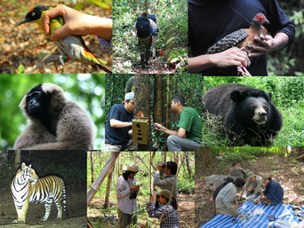

On this page
Lecture slides
Order By
Default
Title
Age-stage Structure
Quarto enables you to weave together content and executable code into a finished document. To learn more about Quarto see https://quarto.org.
Matt
Competition
Quarto enables you to weave together content and executable code into a finished document. To learn more about Quarto see https://quarto.org.
Matt
Exponential growth models
Quarto enables you to weave together content and executable code into a finished document. To learn more about Quarto see https://quarto.org.
Dusit
Extinction
Quarto enables you to weave together content and executable code into a finished document. To learn more about Quarto see https://quarto.org.
Dusit
Geometric and logistic growth models
Quarto enables you to weave together content and executable code into a finished document. To learn more about Quarto see https://quarto.org.
Matt
Harvest models
Quarto enables you to weave together content and executable code into a finished document. To learn more about Quarto see https://quarto.org.
Matt
Introduction to population ecology
Matt

NRN616:Population Ecology
Matt Grainger
Population Viability Analysis
Quarto enables you to weave together content and executable code into a finished document. To learn more about Quarto see https://quarto.org.
Matt
Predation
Quarto enables you to weave together content and executable code into a finished document. To learn more about Quarto see https://quarto.org.
Dusit
Stochasticity
Quarto enables you to weave together content and executable code into a finished document. To learn more about Quarto see https://quarto.org.
Dusit
No matching items